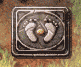
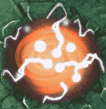

| 概要 | 情報 | アイテム一覧 |
| 敵キャラ一覧 | ステージ一覧 | 夢幻迷宮について |
| 攻略チャート | Zwei!! 攻略へ |
| ステージ選択へ |
エスピナ Lv.18
| A | A-A'間は高速でトゲが移動しています。 通路にツボが点在しているので、注意しながら破壊しましょう。 |
B |
B地点のろうそくに明かりをともすと敵がたくさん現れます。 |
C |
C地点にある月の女神像を動かすと、敵がたくさんあらわれます。 また、C'地点に女神像を置くと扉が開き、先に進めます。 |
| D  | D地点にある足プレートにしばらく乗っていると扉が開きます。 敵には滅多なことでは攻撃されないので、安心してください。 |
 |
|
| E | E地点の風船を割ると、トゲが動き始めます。 何かしらの対策をしないと、ダメージを受けるのは必須です。 |
| F | 部屋Fに入ると、マップには表示されていない敵が現れます。 落ち着いて対処しましょう。 |
G |
G地点の重いブロックはあまり動かさないようにしましょう。 先にある扉へ入れなくなります。 |
| H |
H地点にあるろうそくに火をともすと、H'地点の扉が開きます。 |
| I | I地点の風船を割ると、部屋にたくさん敵が現れます。 |
| J |
J、J'、J'、'J'''地点のろうそく全てに灯をともすと、中央に引っ張る力がなくなります。 ただし、各ろうそくに火をともすたびに、敵が現れるので注意しましょう。 |
| K  |
K地点にある発光する物体に触れると、すごいダメージを受けるので注意しましょう。 |
| L | L-L'間にはトゲと障壁が点在しています。 それなりの対策をしない限り、トゲでダメージを受けてしまいます。 |
| ステージ選択へ |
| 概要 | 情報 | アイテム一覧 |
| 敵キャラ一覧 | ステージ一覧 | 夢幻迷宮について |
| 攻略チャート | Zwei!! 攻略へ |
Zwei!!
| 目次へ戻る | ページの上部へ |